14 Spectral Analysis Principles and Tools
14.1 Spectral analysis concepts
A time series \(x_{t}\) with stationary covariance, mean \(μ\) and \(k^{th}\) autocovariance \(E(x_{t}-\mu)(x_{t- k}\mu))=\gamma(k)\) can be described as a weighted sum of periodic trigonometric functions: \(sin(\omega t)\) and \(cos(\omega t)\), where \(\omega=\frac{2*pi}{T}\) denotes frequency. Spectral analysis investigates this frequency domain representation of \(x_{t}\) to determine how important cycles of different frequencies are in accounting for the behavior of \(x_{t}\).
Assuming that the autocovariances \(\gamma(k)\) are absolutely summable(\(\sum_{k =-\infty}^{\infty}|\gamma(k)|<\infty\)), the autocovariance generating function, which summarizes these autocovariances through a scalar valued function, is given by equation [1]1.
\(acgf(z)=\sum_{k=-\infty}^{\infty}{z^{k}\gamma(k)}\),
where \(z\) denotes complex scalar.
Once the equation [1]is divided by \(\pi\) and evaluated at some \(z{= e}^{- i\omega} = cos\omega - isin\omega\), where \(i = \sqrt{- 1}\) and \(\omega\) is a real scalar, \(\ - \infty < \ \omega < \infty\), the result of this transformation is called a population spectrum \(f(\omega)\)for \(\ x_{t}\), given in equation [2]2.
\[ f(\omega) = \frac{1}{\pi}\sum_{k=- \infty}^{\infty}{e^{- ik\omega}\gamma(k)} \]
Therefore, the analysis of the population spectrum in the frequency domain is equivalent to the examination of the autocovariance function in the time domain analysis; however it provides an alternative way of inspecting the process. Because \(f(\omega)\text{dω}\) is interpreted as a contribution to the variance of components with frequencies in the range \((\omega,\ \omega + d\omega)\), a peak in the spectrum indicates an important contribution to the variance at frequencies near the value that corresponds to this peak.
As \(e\^{- i\omega} = cos\omega - isin\omega\), the spectrum can be also expressed as in equation [3].
\[ f(\omega) = \frac{1}{\pi}\sum_{k = - \infty}^{\infty}{(cos\omega k - isin\omega k)\gamma(k)} \]
Since \(\gamma(k) = \gamma( - k)\) (i.e. \(\gamma(k)\) is an even function of \(k\)) and \(\sin{( - x)}\ = \operatorname{-sin}x\), [3] can be presented as equation
\[ f(\omega) = \frac{1}{\pi}\lbrack \ \gamma(0) + 2\sum_{k = 1}^{\infty}{\ \gamma(k)}cos\text{ωk} \rbrack \],
This implies that if autocovariances are absolutely summable the population spectrum exists and is a continuous, real-valued function of \(\omega\). Due to the properties of trigonometric functions \((\cos( - \omega k) = \cos(\text{ωk})\) and \(\cos(\omega + 2\pi j)k = cos(\omega k))\) the spectrum is a periodic, even function of \(\omega\), symmetric around \(\omega = 0\). Therefore, the analysis of the spectrum can be reduced to the interval \(( - \pi,\pi)\). The spectrum is non-negative for all \(\omega \in ( - \pi,\pi)\).
The shortest cycle that can be distinguished in a time series lasts two periods. The frequency which corresponds to this cycle is \(\omega = \pi\) and is called the Nyquist frequency. The frequency of the longest cycles that can be observed in the time series with \(n\) observations is \(\omega = \frac{2\pi}{n}\) and is called the fundamental (Fourier) frequency.
Note that if \(x_{t}\) is a white noise process with zero mean and variance \(\sigma^{2}\), then for all \(|k|> 0\) \(\gamma(k)=0\) and the spectrum of \(x_{t}\) is constant (\(f(\omega)= \frac{\sigma^{2}}{\pi}\)) since each frequency in the spectrum contributes equally to the variance of the process3.
The aim of spectral analysis is to determine how important cycles of different frequencies are in accounting for the behaviour of a time series4. Since spectral analysis can be used to detect the presence of periodic components, it is a natural diagnostic tool for detecting trading day effects as well as seasonal effects5. Among the tools used for spectral analysis are the autoregressive spectrum and the periodogram.
The explanations given in the subsections of this node derive mainly from DE ANTONIO, D., and PALATE, J. (2015) and BROCKWELL, P.J., and DAVIS, R.A. (2006).
comment1: end old intro: ok
14.1.1 Theoretical spectral density of an ARIMA model
14.2 Spectral density estimation
14.2.1 Method 1: The periodogram
For any given frequency \(\omega\) the sample periodogram is the sample analog of the sample spectrum. In general, the periodogram is used to identify the periodic components of unknown frequency in the time series. X-13ARIMA-SEATS and TRAMO-SEATS use this tool for detecting seasonality in raw time series and seasonally adjusted series. Apart from this it is applied for checking randomness of the residuals from the ARIMA model.
To define the periodogram, first consider the vector of complex numbers6:
\[ \mathbf{x} = \begin{bmatrix} x_{1} \\ x_{2} \\ . \\ . \\ . \\ x_{n} \\ \end{bmatrix} \in \mathbb{C}^{n} \]
where \(\mathbb{C}^{n}\) is the set of all column vectors with complex-valued components.
The Fourier frequencies associated with the sample size \(n\) are defined as a set of values \(ω_{j} = \frac{2\pi j}{n}\), \(j = - \lbrack \frac{n-1}{2}\rbrack,\ldots,\lbrack\frac{n}{2}\rbrack\), \(-\pi< \omega_{j} \leq \pi\), \(j\in F_{n}\), where \({\lbrack n\rbrack}\) denotes the largest integer less than or equal to \(n\). The Fourier frequencies, which are called harmonics, are given by integer multiples of the fundamental frequency \(\ \frac{2\pi}{n}\).
Now the \(n\) vectors \(e_{j} = n^{- \frac{1}{2}}(e^{-i\omega_{j}},e^{-i{2\omega}_{j}},\ldots,e^{- inω_{j}})^{'}\) can be defined. Vectors \(e_{1},\ldots, e_{n}\) are orthonormal in the sense that:
\[ {\mathbf{e}_{j}^{*}\mathbf{e}}_{k} = n^{- 1}\sum_{r = 1}^{n}e^{ir(\omega_{j} - \omega_{k})} = { \begin{matrix} 1,\ if\ j = k \\ 0,\ if\ j \neq k \\ \end{matrix}} \]
where \(\mathbf{e}_{j}^{*}\) denotes the row vector, which \(k^{th}\) component is the complex conjugate of the \(k^{th}\) component of \(\mathbf{e}_{j}\).7 These vectors are a basis of \(F_{n}\), so that any \(\mathbf{x}\in\mathbb{C}^{n}\) can be expressed as a sum of \(n\) components:
\[ \mathbf{x} = \sum_{j = - \lbrack\frac{n - 1}{2}\rbrack}^{\lbrack\frac{n}{2}\rbrack}{a_{j}\mathbf{e}_{j}} \]
where the coefficients \(a_{j} = \mathbf{e}_{j}^{*}\mathbf{x}=n^{-\frac{1}{2}}\sum_{t = 1}^{n}x_{t}e^{-it\omega_{j}}\) are derived from [3] by multiplying the equation on the left by \(\mathbf{e}_{j}^{*}\) and using [1].
The sequence of \(\{a_{j},j\in F_{n}\}\) is referred as a discrete Fourier transform of \(\mathbf{x}\mathbb{\in C}^{n}\) and the periodogram \(I(\omega_{j})\) of \(\mathbf{x}\) at Fourier frequency \(\omega_{j} = \frac{2\pi j}{n}\) is defined as the square of the Fourier transform \(\{a_{j}\}\) of \(\mathbf{x}\):
\[ {I(\omega_{j})\mathbf{=}{| a_{j} |^{2}}_{\ } = n^{- \ 1}| \sum_{t = 1}^{n}x_{t}e^{- it\omega_{j}} |^{2}}_{\mathbf{\ }} \]
From [2] and [3] it can be shown that in fact the periodogram decomposes the total sum of squares \(\sum_{t = 1}^{n}| x_{t} |^{2}\) into a sums of components associated with the Fourier frequencies \[ω_{j}\]:
\[ \sum_{t=1}^{n}{|x_{t}|}^{2} = \sum_{j = - \lbrack\frac{n - 1}{2}\rbrack}^{\lbrack\frac{n}{2}\rbrack}|a_{j}|^{2} = \sum_{j = - \lbrack\frac{n - 1}{2}\rbrack}^{\lbrack\frac{n}{2}\rbrack}{I(\omega_{j})} \]
If \(\ \mathbf{x\ \in}\ {R}^{n}\), \(\omega_{j}\) and \({-\omega}_{j}\) are both in \(\lbrack- \pi, -\pi \rbrack\) and \(a_{j}\) is presented in its polar form (i.e. \(a_{j} = r_{j}\exp( i\theta_{j})\)), where \(r_{j}\) is the modulus of \(a_{j}\), then [3] can be rewritten in the form:
\[ \mathbf{x} = a_{0}\mathbf{e}_{0} + \sum_{j = 1}^{\lbrack\frac{n - 1}{2}\rbrack}{ {2^{1/2}r}_{j}{(\mathbf{c}}_{j}\cos\theta_{j}{- \mathbf{s}}_{j}\sin\theta_{j}) + a_{n/2}\mathbf{e}_{n/2}} \]
The orthonormal basis for \({R}^{n}\) is \(\{\mathbf{e}_{0},\mathbf{c}_{1},\mathbf{s}_{1},\ldots,\mathbf{c}_{\lbrack\frac{n - 1}{2}\rbrack},\mathbf{s}_{\lbrack\frac{n - 1}{2}\rbrack},\mathbf{e}_{\frac{n}{2}(excluded\ if\ n\ is\ odd)}\}\), where:
\(\mathbf{e}_{0}\) is a vector composed of n elements equal to \(n^{- 1/2}\), which implies that \(\mathbf{a}_{0}\mathbf{e}_{0} = {(n^{-1}\sum_{t = 1}^{n}x_{t},\ldots,n^{- 1}\sum_{t=1}^{n}x_{t})}^{'}\);
\[ \mathbf{c}_{j}=(\frac{n}{2})^{- 1/2}{(\cos\omega_{j},\cos{2\omega}_{j},\ldots,\cos{n\omega_{j}})}^{'}, for 1 \leq j \leq \lbrack \frac{(n - 1)}{2}\rbrack \] ;
\[ \mathbf{s}_{j} = {(\frac{n}{2})}^{-1/2}{(\sin{\omega_{j}},\sin{2\omega_{j}},\ldots,\sin{n\omega_{j}})}^{'},\ for\ 1 \leq j \leq \lbrack \frac{(n - 1)}{2} \rbrack \];
\[ \mathbf{e}_{n/2} = {(- (n^{-\frac{1}{2}}),n^{- \frac{1}{2}},\ldots,{-(n)}^{- \frac{1}{2}}),n^{-\frac{1}{2}})}^{'} \].
Equation [5] can be seen as an OLS regression of \(x_{t}\) on a constant and the trigonometric terms. As the vector of explanatory variables includes \(n\) elements, the number of explanatory variables in [5] is equal to the number of observations. HAMILTON, J.D. (1994) shows that the explanatory variables are linearly independent, which implies that an OLS regression yields a perfect fit (i.e. without an error term). The coefficients have the form of a simple OLS projection of the data on the orthonormal basis:
\[ {\widehat{a}}_{0}=\frac{1}{\sqrt{n}}\sum_{t=1}^{n}x_{t} \] [7]
\[ {\widehat{a}}_{n/2}=\frac{1}{\sqrt{n}}\sum_{t=1}^{n}{(-1)}^{t}x_{t}( \text{only when n is even}) \] [8]
\[ {\widehat{a}}_{0}=\frac{1}{\sqrt{n}}\sum_{t=1}^{n}x_{t} \] [9]
\[ {\widehat{\alpha}}_{j} = 2^{1/2}r_{j}\cos{\theta_{j}} = {(\frac{n}{2})}^{- 1/2}\sum_{t = 1}^{n}x_{t}\cos{(t\frac{2\pi j}{n})}, j = 1,\ldots,\lbrack\frac{n - 1}{2}\rbrack \] [10]
\[ {\widehat{\beta}}_{j} = 2^{1/2}r_{j}\sin{\theta_{j}} = {(\frac{n}{2})}^{-1/2}\sum_{t = 1}^{n}x_{t}\sin{(t\frac{2\pi j}{n})}, j = 1,\ldots,\lbrack\frac{n - 1}{2}\rbrack \] [11]
With [5] the total sum of squares \(\sum_{t = 1}^{n}| x_{t} |^{2}\) can be decomposed into \(2 \times \lbrack\frac{n - 1}{2}\rbrack\) components corresponding to \(\mathbf{c}_{j}\) and \(\mathbf{s}_{j}\), which are grouped to produce the “frequency \(ω_{j}\)” component for \(1 \geq j \geq \lbrack\frac{n - 1}{2}\rbrack\). As it is shown in the table below, the value of the periodogram at the frequency \(\omega_{j}\) is the contribution of the \(j\^{\text{th}}\) harmonic to the total sum of squares \(\sum_{t = 1}^{n}| x_{t} |^{2}\).
Decomposition of sum of squares into components corresponding to the harmonics
{: .table .table-style} |Frequency |Degrees of freedom |Sum of squares decomposition| |———————————————– |———————— |————————————————————-| |\(\omega_{0}\)(mean) |1 |\({a_{0}^{2}}_{\ }=n^{- 1}(\sum_{t=1}^{n}x_{t})^{2} = I( 0)\)| |\(\omega_{1}\) |2 |\({2r_{1}^{2}}_{\ } = 2{\|a_{1}\|}^{2} = 2I(\omega_{1})\)| |\(\vdots\) |\(\vdots\) |\(\vdots\)| |\(\omega_{k}\) |2 |\({2r_{k}^{2}}_{\ } = 2{\|a_{k}\|}^{2} = 2I(\omega_{k})\)| |\[\vdots\] |\(\vdots\) |\(\vdots\)| |\(\omega_{n/2} = \pi\) (excluded if \(n\) is odd) |1 |\(a_{n/2}^{2} = I(\pi)\)| |Total |\(\mathbf{n}\) |\(\sum_{\mathbf{t = 1}}^{\mathbf{n}}\mathbf{x}_{\mathbf{t}}^{\mathbf{2}}\)|
Source: DE ANTONIO, D., and PALATE, J. (2015).
Obviously, if series were random then each component \(I(\omega\_{j})\) would have the same expectation. On the contrary, when the series contains a systematic sine component having a frequency \(j\) and amplitude \(A\) then the sum of squares \(I(\omega_{j})\) increases with \(A\). In practice, it is unlikely that the frequency \(j\) of an unknown systematic sine component would exacly match any of the frequencies, for which peridogram have been calcuated. Therefore, the periodogram would show an increase in intensities in the immediate vicinity of \(j\).8
Note that in JDemetra+ the periodogram object corresponds exactly to the contribution to the sum of squares of the standardised data, since the series are divided by their standard deviation for computational reasons.
Using the decomposition presented in table above the periodogram can be expressed as:
\[ I(\omega_{j})\mathbf{=}\begin{matrix} r_{j}^{2} = \frac{1}{2}{(\alpha}_{j}^{2} + \beta_{j}^{2}) = \ {\frac{1}{n}(\sum_{t = 1}^{n}{x_{t}\cos{( {t\frac{2\pi j}{n}}_{\ })\ }})}^{2} + \frac{1}{n}(\sum_{t = 1}^{n}{x_{t}\sin( t\frac{2\pi j}{n})_{\ }})^{2} \\ \end{matrix} \] [12]
where \(j = 0,\ldots,lbrack \frac{n}{2} rbrack\).
Since \(\mathbf{x} - \overline{\mathbf{x}}\) are generated by an orthonormal basis, and \(\overline{\mathbf{x}}\mathbf{=}a_{0}\mathbf{e}_{0}\) [5] can be rearranged to show that the sum of squares is equal to the sum of the squared coefficients:
\[ \mathbf{x} - a_{0}\mathbf{e}_{0} =\sum_{j=1}^{\lbrack(n - 1)/2\rbrack}(\alpha_{j}\mathbf{c}_{j}+\beta_{j}\mathbf{s}_{j}) + a_{n/2}\mathbf{e}_{n/2} \]. [13]
Thus the sample variance of \[x_{t}\] can be expressed as:
\[ n^{- 1}\sum_{t=1}^{n}{(x_{t}-\overline{x})}^{2}=n^{-1}(\sum_{k=1}^{\lbrack(n - 1)/2\rbrack}2{r_{j}}^{2} +{a_{n/2}}^{2}) \], [14]
where \(a_{n/2}^{2}\) is excluded if \(n\) is odd.
The term \(2{r_{j}}^{2}\) in [14] is then the contribution of the \(j^{\text{th}}\) harmonic to the variance and [14] shows then how the total variance is partitioned.
The periodogram ordinate \(I(\omega_{j})\) and the autocovariance coefficient \(\gamma(k)\) are both quadratic forms of \(x_{t}\). It can be shown that the periodogram and autocovarinace function are related and the periodogram can be written in terms of the sample autocovariance function for any non-zero Fourier frequency \(ω_{j}\) :9
\[ I(\omega_{j}) = \sum_{| k | < n}^{\ }{\widehat{\gamma}( k)}_{\ }e^{- ik\omega_{j}} = {\widehat{\gamma}( 0)}_{\ } + 2\sum_{k = 1}^{n - 1}{\widehat{\gamma}( k)\cos{(k\omega_{j})}}_{\ } \]
and for the zero frequency \(\ I( 0) = n| \overline{x} |^{2}\).
Once comparing [15] with an expression for the spectral density of a stationary process:
\[ f(\omega_{\ }) = \frac{1}{2\pi}\sum_{k < - \infty}^{\infty}{\gamma( k)}_{\ }e^{- ik\omega_{\ }} = \frac{1}{2\pi}lbrack {\gamma( 0)}_{\ } + 2(\sum_{k = 1}^{\infty}{\gamma( k)\cos{(k\omega_{\ })}}) rbrack \]
It can be noticed that the periodogram is a sample analog of the population spectrum. In fact, it can be shown that the periodogram is asymptotically unbiased but inconsistent estimator of the population spectrum \(f(\omega)\).[^75] Therefore, the periodogram is a wildly fluctuating, with high variance, estimate of the spectrum. However, the consistent estimator can be achieved by applying the different linear smoothing filters to the periodogram, called lag-window estimators. The lag-window estimators implemented in JDemetra+ includes square, Welch, Tukey, Barlett, Hanning and Parzen. They are described in DE ANTONIO, D., and PALATE, J. (2015). Alternatively, the model-based consistent estimation procedure, resulting in autoregressive spectrum estimator, can be applied.
comment2: end part theory>spectral analysis>periodogram
14.2.2 Method 2: Autoregressive spectrum estimation
BROCKWELL, P.J., and DAVIS, R.A. (2006) point out that for any real-valued stationary process \((x_{t})\) with continuous spectral density \(f(\omega)\) it is possible to find both \(AR(p)\) and \(MA(q)\) processes which spectral densities are arbitrarily close to \(f(\omega)\). For this reason, in some sense, \((x_{t})\) can be approximated by either \(AR(p)\) or \(MA(q)\) process. This fact is a basis of one of the methods of achieving a consistent estimator of the spectrum, which is called an autoregressive spectrum estimation. It is based on the approximation of the stochastic process \((x_{t})\) by an autoregressive process of sufficiently high order \(p\):
\[ x_{t} = \mu + (\phi_{1}B + \ldots + \phi_{p}B^{p})x_{t} + \varepsilon_{t} \]
where \(\varepsilon_{t}\) is a white-noise variable with mean zero and a constant variance.
The autoregressive spectrum estimator for the series \(x_{t}\) is defined as: 10
\[ \widehat{s}(\omega) = 10\operatorname{\times}{\log_{10}\frac{\sigma_{x}^{2}}{2\pi{|1 - \sum_{k = 1}^{p}{\widehat{\phi}}_{k}e^{- ik\omega}|}^{2}}} \]
where:
\(\omega\)– frequency, \(0 \leq \omega \leq \pi\);
\(\sigma_{x}^{2}\) – the innovation variance of the sample residuals;
\({\widehat{\phi}}_{k}\) – \(\text{AR}(k)\) coefficient estimates of the linear regression of \(x_{t} - \overline{x}\) on \(x_{t - k} - \overline{x}\), \(1 \leq k \leq p\).
The autoregressive spectrum estimator is used in the visual spectral analysis tool for detecting significant peaks in the spectrum. The criterion of visual significance, implemented in JDemetra+, is based on the range \({\widehat{s}}^{\max} - {\widehat{s}}^{\min}\) of the \(\widehat{s}(\omega)\) values, where \({\widehat{s}}^{\max} = \max_{k}\widehat{s}(\omega_{k})\); \({\widehat{s}}^{\min} = \min_{k}\widehat{s}(\omega_{k});\) and \(\widehat{s}(\omega\_{k})\) is \(k^{\text{th}}\) value of autoregressive spectrum estimator.
The particular value is considered to be visually significant if, at a trading day or at a seasonal frequency \(\omega_{k}\) (other than the seasonal frequency \(\omega_{60} = \pi\)), \(\widehat{s}(\omega\_{k})\) is above the median of the plotted values of \(\widehat{s}(\omega_{k})\) and is larger than both neighbouring values \(\widehat{s}(\omega_{k - 1})\) and \(\widehat{s}(\omega_{k + 1})\) by at least \(\frac{6}{52}\) times the range \({\widehat{s}}^{\max} - {\widehat{s}}^{\min}\).
Following the suggestion of SOUKUP, R.J., and FINDLEY, D.F. (1999), JDemetra+ uses an autoregressive model spectral estimator of model order 30. This order yields high resolution of strong components, meaning peaks that are sharply defined in the plot of \(\widehat{s}(\omega)\) with 61 frequencies. The minimum number of observations needed to compute the spectrum is set to \(n=80\) for monthly data and to \(n=60\) for quarterly series while the maximum number of observations considered for the estimation is 121. Consequently, with these settings it is possible to identify up to 30 peaks in the plot of 61 frequencies. By choosing \(\omega_{k} = \frac{\text{πk}}{60}\) for \(k=0,1,...,60\) the density estimates are calculated at exact seasonal frequencies (1, 2, 3, 4, 5 and 6 cycles per year).
The model order can also be selected based on the AIC criterion (in practice it is much lower than 30). A lower order produces the smoother spectrum, but the contrast between the spectral amplitudes at the trading day frequencies and neighbouring frequencies is weaker, and therefore not as suitable for automatic detection.
SOUKUP, R.J., and FINDLEY, D.F. (1999) also explain that the periodogram can be used in the visual significance test as it has as good as those of the AR(30) spectrum abilities to detect trading day effect, but also has a greater false alarm rate11.
comment2: end part theory>spectral analysis>auto-regressive spectrum
14.2.3 Method 3: Tukey spectrum
14.3 Identification of spectral peaks
comment3: start part theory>spectral analysis>identification of spectral peaks
Identification of seasonal peaks in a Tukey periodogram and in an autoregressive spectrum
In order to decide whether a series has a seasonal component that is predictable (stable) enough, these tests use visual criteria and formal tests for the periodogram. The periodogram is calculated using complete years, so that the set of Fourier frequencies contains exactly all seasonal frequencies12.
The tests rely on two basic principles:
The peaks associated with seasonal frequencies should be larger than the median spectrum for all frequencies and;
The peaks should exceed the spectrum of the two adjacent values by more than a critical value.
JDemetra+ performs this test on the original series. If these two requirements are met, the test results are displayed in green. The statistical significance of each of the seasonal peaks (i.e. frequencies \(\frac{\pi}{6},\ \frac{\pi}{3},\ \frac{\pi}{2},\ \frac{2\pi}{3}\) and \(\frac{5\pi}{6}\) corresponding to 1, 2, 3, 4 and 5 cycles per year) is also displayed. The seasonal and trading days frequencies depends on the frequency of time series. They are shown in the table below. The symbol \(d\) denotes a default frequency and is described below the table.
The seasonal and trading day frequencies by time series frequency
{: .table .table-style} |Number of months per full period | Seasonal frequency | Trading day frequency (radians)| |————————————–| ————————————————————————————-| ————————————| |12 | \(\frac{\pi}{6},\frac{\pi}{3},\ \frac{\pi}{2},\frac{2\pi}{3},\ \frac{5\pi}{6},\ \pi\) | \(d\), 2.714| |6 | \(\frac{\pi}{3},\frac{2\pi}{3}\), \(\pi\) | \(d\) |4 | \(\frac{\pi}{2}\), \(\pi\) | \(d\), 1.292, 1.850, 2.128| |3 | \(\pi\) | \(d\)| |2 | \(\pi\) | \(d\)|
The calendar (trading day or working day) effects, related to the variation in the number of different days of the week per period, can induce periodic patterns in the data that can be similar to those resulting from pure seasonal effects. From the theoretical point of view, trading day variability is mainly due to the fact that the average number of days in the months or quarters is not equal to a multiple of 7 (the average number of days of a month in the year of 365.25 days is equal to \(\frac{365.25}{12} = 30.4375 days\)). This effect occurs \(\frac{365.25}{12} \times \frac{1}{7} = 4.3482 times per month\): one time for each one of the four complete weeks of each month, and a residual of 0.3482 cycles per month, i.e. \(0.3482 \times 2\pi = 2.1878 radians\). This turns out to be a fundamental frequency for the effects associated with monthly data. In JDemetra+ the fundamental frequency corresponding to 0.3482 cycles per month is used in place of the closest frequency \(\frac{\text{πk}}{60}\). Thus, the quantity \(\frac{\pi \times 42}{60}\) is replaced by \(\omega_{42} = 0.3482 \times 2\pi = 2.1878\). The frequencies neighbouring \(\omega_{42}\), i.e. \(\omega_{41}\) and \(\omega_{43}\) are set to, respectively, \(2.1865 - \frac{1}{60}\) and \(2.1865 + \frac{1}{60}\).
The default frequencies (\(d\)) for calendar effect are: 2.188 (monthly series) and 0.280 (quarterly series). They are computed as:
\[ \omega_{\text{ce}} = \frac{2\pi}{7}\left( n - 7 \times \left\lbrack \frac{n}{7} \right\rbrack \right) \], [1]
where:
\(n = \frac{365.25}{s}\), \(s = 4\) for quarterly series and \(s = 12\) for monthly series.
Other frequencies that correspond to trading day frequencies are: 2.714 (monthly series) and 1.292, 1.850, 2.128 (quarterly series).
In particular, the calendar frequency in monthly data (marked in red on the figure below) is very close to the seasonal frequency corresponding to 4 cycles per year \(\text{ω}_{40} = \frac{2}{3}\pi = 2.0944\).

Periodogram with seasonal (grey) and calendar (red) frequencies highlighted
This implies that it may be hard to disentangle both effects using the frequency domain techniques.
comment3: end part theory>spectral analysis>identification of spectral peaks
14.3.0.1 in Tukey spectrum
comes from Identification of seasonal peaks in a Tukey spectrum
14.3.0.2 Tukey Spectrum definition
The Tukey spectrum belongs to the class of lag-window estimators. A lag window estimator of the spectral density \(f(\omega)=\frac{1}{2\pi}\sum_{k<-\infty}^{\infty}\gamma(k)e^{i k \omega}\) is defined as follows:
\[ \hat{f}_{L}(\omega)=\frac{1}{2\pi}\sum_{\left| h \right| \leq r } w(h/r)\hat{\gamma}(h)e^{i h \omega} \]
where \(\hat{\gamma}(.)\) is the sample autocovariance function, \(w(.)\) is the lag window, and \(r\) is the truncation lag. \(\left| w(x)\right|\) is always less than or equal to one, \(w(0)=1\) and \(w(x)=0\) for \(\left| x \right| > 1\). The simple idea behind this formula is to down-weight the autocovariance function for high lags where \(\hat{\gamma}(h)\) is more unreliable. This estimator requires choosing \(r\) as a function of the sample size such that \(r/n \rightarrow 0\) and \(r\rightarrow \infty\) when \(n \rightarrow \infty\) . These conditions guarantee that the estimator converges to the true density.
JDemetra+ implements the so-called Blackman-Tukey (or Tukey-Hanning) estimator, which is given by \(w(h/r)=0.5(1+cos(\pi h/r))\) if \(\left| h/r \right| \leq 1\) and \(0\) otherwise.
The choice of large truncation lags \(r\) decreases the bias, of course, but it also increases the variance of the spectral estimate and decreases the bandwidth.
JDemetra+ allows the user to modify all the parameters of this estimator, including the window function.
14.3.0.3 Graphical Test
The current JDemetra+ implementation of the seasonality test is based on a \(F(d_{1},d_{2})\) approximation that has been originally proposed by Maravall (2012) for TRAMO-SEATS. This test is has been designed for a Blackman-Tukey window based on a particular choices of the truncation lag \(r\) and sample size. Following this approach, we determine visually significant peaks for a frequency \(\omega_{j}\) when
\[ \frac{2 f_{x}(\omega_{j})}{\left[ f_{x}(\omega_{j+1})+ f_{x}(\omega_{j-1}) \right]} \ge CV(\omega_{j}) \]
where \(CV(\omega_{j})\) is the critical value of a \(F(d_{1},d_{2})\) distribution, where the degrees of freedom are determined using simulations. For \(\omega_{j}= \pi\), we have a significant peak when \(\frac{f_{x}(\omega_{[n/2]})}{\left[ f_{x}(\omega_{[(n-1)/2]})\right]} \ge CV(\omega_{j})\)
Two significant levels for this test are considered: \(\alpha=0.05\) (code “t”) and \(\alpha=0.01\) (code “T”).
As opposed to the AR spectrum, which is computed on the basis of the last \(120\) data points, we will use here all available observations. Those critical values have been calculated given the recommended truncation lag \(r=79\) for a sample size within the interval \(\in [80,119]\) and \(r=112\) for \(n \in [120,300]\) . The \(F\) approximation is less accurate for sample sizes larger than \(300\). For quarterly data, \(r=44\), but there are no recommendations regarding the required sample size.
14.3.0.4 Use
The test can be applied directly to any series by selecting the option Statistical Methods >> Seasonal Adjustment >> Tools >> Seasonality Tests. This is an example of how results are displayed for the case of a monthly series:
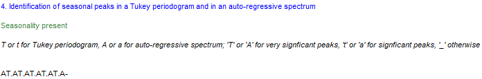
JDemetra+ considers critical values for \(\alpha=1\%\) (code “T”) and \(\alpha=5\%\) (code “t”) at each one of the seasonal frequencies represented in the table below, e.g. frequencies \(\frac{\pi}{6}, \frac{\pi}{3}, \frac{\pi}{2}, \frac{2\pi}{3}\text{ and } \frac{5\pi}{6}\) corresponding to 1, 2, 3, 4, 5 and 6 cycles per year in this example, since we are dealing with monthly data. The codes “a” and “A” correpond to the so-called AR spectrum, so ignore them for the moment.
The seasonal and trading day frequencies by time series frequency
| Number of months per full period | Seasonal frequency | Trading day frequency (radians) |
|---|---|---|
| 12 | \(\frac{\pi}{6},\frac{\pi}{3},\ \frac{\pi}{2},\frac{2\pi}{3},\ \frac{5\pi}{6},\ \pi\) | \(d\), 2.714 |
| 6 | \(\frac{\pi}{3},\frac{2\pi}{3}\), \(\pi\) | \(d\) |
| 4 | \(\frac{\pi}{2}\), \(\pi\) | \(d\), 1.292, 1.850, 2.128 |
| 3 | \(\pi\) | \(d\) |
| 2 | \(\pi\) | \(d\) |
Currently, only seasonal frequencies are tested, but the program allows you to manually plot the Tukey spectrum and focus your attention on both seasonal and trading day frequencies.
14.3.0.5 References
- Tukey, J. (1949). The sampling theory of power spectrum estimates., Proceedings Symposium on Applications of Autocorrelation Analysis to Physical Problems, NAVEXOS-P-735, Office of Naval Research, Washington, 47-69
14.3.0.6 in AR Spectrum definition
comes from: “Identification of seasonal peaks in autoregressive spectrum”
The estimator of the spectral density at frequency \(\lambda \in [0,\pi]\) will be given by the assumption that the series will follow an AR(p) process with large \(p\). The spectral density of such model, with an innovation variance \(var(x_{t})=\sigma^2_x\), is expressed as follows:
\[ 10\times log_{10} f_x(\lambda)=10\times log_{10} \frac{\sigma^2_x}{2\pi \left|\phi(e^{i\lambda}) \right|^2 }=10\times log_{10} \frac{\sigma^2_x}{2\pi \left|1-\sum_{k=1}^{p}\phi_k e^{i k \lambda}) \right|^2 } \]
where \(\phi_k\) denotes the AR(k) coefficient, and \(e^{-ik\lambda}=cos(-ik\lambda)+i sin(-ik\lambda)\).
Soukup and Findely (1999) suggest the use of p=30, which in practice much larger than the order that would result from the AIC criterion. The minimum number of observations needed to compute the spectrum is set to n=80 for monthly data (or n=60) for quarterly series. In turn, the maximum number of observations considered for the estimation is n=121. This choice offers enough resolution, being able to identify a maximum of 30 peaks in a plot of 61 frequencies: by choosing \(\lambda_j=\pi j/60\),for \(j=0,1,…,60\), we are able to calculate our density estimates at exact seasonal frequencies (1, 2, 3, 4, 5 and 6 cycles per year). Note that \(x\) cycles per year can be converted into cycles per month by simply dividing by twelve, \(x/12\), and to radians by applying the transformation \(2\pi(x/12)\).
The traditional trading day frequency corresponding to 0.348 cycles per month is used in place of the closest frequency \(\pi j/60\). Thus, we replace \(\pi 42/60\) by \(\lambda_{42}=0.348\times 2 \pi = 2.1865\). The frequencies neighbouring \(\lambda_{42}\) are set to \(\lambda_{41}= 2.1865-1/60\) and \(\lambda_{43}= 2.1865+1/60\). The periodogram below illustrates the proximity of this trading day frequency \(\lambda_{42}\) (red shade) and the frequency corresponding to 4 cycles per year \(\lambda_{40}=2.0944\). This proximity is precisely what poses the identification problems: the AR spectrum boils down to a smoothed version of the periodogram and the contribution of the of the trading day frequency may be obscured by the leakage resulting from the potential seasonal peak at \(\lambda_{40}\), and vice-versa.
Periodogram with seasonal (grey) and calendar (red) frequencies highlighted
JDemetra+ allows the user to modify the number of lags of this estimator and to change the number of observations used to determine the AR parameters. These two options can improve the resolution of this estimator.
14.3.0.7 Graphical Test
The statistical significance of the peaks associated to a given frequency can be informally tested using a visual criterion, which has proved to perform well in simulation experiments. Visually significant peaks for a frequency \(\lambda_{j}\) satisfy both conditions:
- \(\frac{f_{x}(\lambda_{j})- \max \left\{f_{x}(\lambda_{j+1}),f_{x}(\lambda_{j-1}) \right\}}{\left[ \max_{k}f_{x}(\lambda_{k})-\min_{i}f_{x}(\lambda_{i}) \right]}\ge CV(\lambda_{j})\), where \(CV(\lambda_{j})\) can be set equal to \(6/52\) for all \(j\)
- \(f_{x}(\lambda_{j})> median_{j} \left\{ f_{x}(\lambda_{j}) \right\}\), which guarantees \(f_{x}(\lambda_{j})\) it is not a local peak.
The first condition implies that if we divide the range \(\max_{k}f_{x}(\lambda_{k})-\min_{i}f_{x}(\lambda_{i})\) in 52 parts (traditionally represented by stars) the height of each pick should be at least 6 stars.
14.3.0.8 Use
The test can be applied directly to any series by selecting the option Statistical Methods >> Seasonal Adjustment >> Tools >> Seasonality Tests. This is an example of how results are displayed for the case of a monthly series:
JDemetra+ considers critical values for \(\alpha=1\%\) (code “A”) and \(\alpha=5\%\) (code “a”) at each one of the seasonal frequencies represented in the table below, e.g. frequencies \(\frac{\pi}{6}, \frac{\pi}{3}, \frac{\pi}{2}, \frac{2\pi}{3}\text{ and } \frac{5\pi}{6}\) corresponding to 1, 2, 3, 4, 5 and 6 cycles per year in this example, since we are dealing with monthly data. The codes “t” and “T” correpond to the so-called Tukey spectrum, so ignore them for the moment.
The seasonal and trading day frequencies by time series frequency
{: .table .table-style} |Number of months per full period | Seasonal frequency | Trading day frequency (radians)| |————————————–| ————————————————————————————-| ————————————| |12 | \(\frac{\pi}{6},\frac{\pi}{3},\ \frac{\pi}{2},\frac{2\pi}{3},\ \frac{5\pi}{6},\ \pi\) | \(d\), 2.714| |6 | \(\frac{\pi}{3},\frac{2\pi}{3}\), \(\pi\) | \(d\) |4 | \(\frac{\pi}{2}\), \(\pi\) | \(d\), 1.292, 1.850, 2.128| |3 | \(\pi\) | \(d\)| |2 | \(\pi\) | \(d\)|
Currently, only seasonal frequencies are tested, but the program allows you to manually plot the AR spectrum and focus your attention on both seasonal and trading day frequencies. Agustin Maravall has conducted a simulation experiment to calculate \(CV(\lambda_{42})\) (trading day frequency) and proposes to set for all \(j\) equal to the critical value associated to the trading frequency, but this is currently not part of the current automatic testing procedure of JDemetra+.
14.3.0.9 References
- Soukup, R.J., and D.F. Findley (1999) On the Spectrum Diagnosis used by X12-ARIMA to Indicate the Presence of Trading Day Effects After Modeling or Adjustment. In Proceedengs of the American Statistical Association. Business and Economic Statistics Section, 144-149, Alexandria, VA.
14.3.0.10 in a Periodogram
comes from: Identification of seasonal peaks in periodogram
The periodogram \(I(\omega_j)\) of \(\mathbf{X} \in \mathbb{C}^n\) is defined as the squared of the Fourier transform
\[ I(\omega_{j})=a_{j}^{2}=n^{-1}\left| \sum_{t=1}^{n}\mathbf{X_t} e^{-it\omega_j} \right|^{2}, \]
where the Fourier frequencies \(\omega_{j}\) are given by multiples of the fundamental frequency \(\frac{2\pi}{n}\):
\[ \omega_{j}= \frac{2\pi j}{n}, -\pi < \omega_{j} \leq \pi \]
An orthonormal basis in \(\mathbb{R}^n\):
\[
\left\{ e_0, ~~~~~~c_1, s_1, ~~~~~\ldots~~~~~\ , ~~~~c_{[(n-1)/2]}, s_{[(n-1)/2]}~~~~,~~~~~~ e_{n/2} \right\},
\] where \(e_{n/2}\) is excluded if \(n\) is odd,
can be used to project the data and obtain the spectral decomposition
Thus, the periodogram is given by the projection coefficients and represents the contribution of the jth harmonic to the total sum of squares, as illustrated by Brockwell and Davis (1991):
| Source | Degrees of freedom |
|---|---|
| Frequency \(\omega_{0}\) | 1 |
| Frequency \(\omega_{1}\) | 2 |
| \(\vdots\) | \(\vdots\) |
| Frequency \(\omega_{k}\) | 2 |
| \(\vdots\) | \(\vdots\) |
| Frequency \(\omega_{n/2}=\pi\) | 1 |
| (excluded if \(n\) is odd) | |
| \(=========\) | \(======\) |
| Total | n |
\[ ~~~~ \]
In JDemetra+, the periodogram of \(\mathbf{X} \in \mathbb{R}^n\) is computed for the standardized time series.
14.3.0.11 Defining a F-test
Brockwell and Davis (1991, section 10.2) exploit the fact that the periodogram can be expressed as the projection on the orthonormal basis defined above to derive a test. Thus, under the null hypothesis:
- \(2I(\omega_{k})= \| P_{\bar{sp}_{\left\{ c_{k},s_{k} \right\}}} \mathbf{X} \|^{2} \sim \sigma^{2} \chi^{2}(2)\), for Fourier frequencies \(0 < \omega_{k}=2\pi k/n < \pi\)
- \(I(\pi)= \| P_{\bar{sp}_{\left\{ e_{n/2} \right\}}} \mathbf{X} \|^{2} \sim \sigma^{2} \chi^{2}(1)\), for \(\pi\)
Because \(I(\omega_{k})\) is independent from the projection error sum of squares, we can define our F-test statistic as follows:
- \(\frac{ 2I(\omega_{k})}{\|\mathbf{X}-P_{\bar{sp}_{\left\{ e_0,c_{k},s_{k} \right\}}} \mathbf{X}\|^2} \frac{n-3}{2} \sim F(2,n-3)\), for Fourier frequencies \(0 < \omega_{k}=2\pi k/n < \pi\)
- \(\frac{ I(\pi)}{\|\mathbf{X}-P_{\bar{sp}_{\left\{ e_0,e_{n/2} \right\}}} \mathbf{X}\|^2} \frac{n-2}{1} \sim F(1,n-2)\), for \(\pi\)
where - \(\|\mathbf{X}-P_{\bar{sp}_{\left\{ e_0,c_{k},s_{k} \right\}}} \mathbf{X}\|^2 = \sum_{i=1}^{n}\mathbf{X^2_i}-I(0)-2I(\omega_{k}) \sim \sigma^{2} \chi^{2}(n-3)\) for Fourier frequencies \(0 < \omega_{k}=2\pi k/n < \pi\) - \(\|\mathbf{X}-P_{\bar{sp}_{\left\{ e_0,e_{n/2} \right\}}} \mathbf{X}\|^2 = \sum_{i=1}^{n}\mathbf{X^2_i}-I(0)-I(\pi) \sim \sigma^{2} \chi^{2}(n-2)\) for \(\pi\)
Thus, we reject the null if our F-test statistic computed at a given seasonal frequency (different from \(\pi\)) is larger than \(F_{1-α}(2,n-3)\). If we consider \(\pi\), our test statistic follows a \(F_{1-α}(1,n-2)\) distribution.
14.3.0.12 Seasonality test
The implementation of JDemetra+ considers simultaneously the whole set of seasonal frequencies (1, 2, 3, 4, 5 and 6 cycles per year). Thus, the resulting test-statistic is:
\[ \frac{ 2I(\pi/6)+ 2I(\pi/3)+ 2I(2\pi/3)+ 2I(5\pi/6)+ \delta I(\pi)}{\left\|\mathbf{X}-P_{\bar{sp}_{\left\{ e_0,c_{1},s_{1},c_{2},s_{2},c_{3},s_{3},c_{4},s_{4},c_{5},s_{5}, \delta e_{n/2} \right\}}} \mathbf{X} \right\|^2} \frac{n-12}{11} \sim F(11-\delta,n-12+\delta) \] where \(\delta=1\) if \(n\) is even and 0 otherwise.
In small samples, the test performs better when the periodogram is evaluated as the exact seasonal frequencies. JDemetra+ modifies the sample size to ensure the seasonal frequencies belong to the set of Fourier frequencies. This strategy provides a very simple and effective way to eliminate the leakage problem.
Example of how results are displayed:
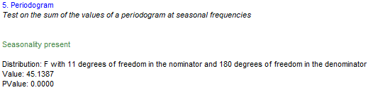
14.3.0.13 References
Brockwell, P.J., and R.A. Davis (1991). Times Series: Theory and Methods. Springer Series in Statistics.
14.4 Spectral graphs
probably moove this part to GUI (Tools), just leave a link
comment3: start part case studies > spectral graphs
This scenario is designed for advanced users interested in an in-depth analysis of time series in the frequency domain using three spectral graphs. Those graphs can also be used as a complementary analysis for a better understanding of the results obtained with some of the tests described above.
Economic time series are usually presented in a time domain (X-axis). However, for analytical purposes it is convenient to convert the series to a frequency domain due to the fact that any stationary time series can be expressed as a combination of cosine (or sine) functions. These functions are characterized with different periods (amount of time to complete a full cycle) and amplitudes (maximum/minimum value during the cycle).
The tool used for the analysis of a time series in a frequency domain is called a spectrum. The peaks in the spectrum indicate the presence of cyclical movements with periodicity between two months and one year. A seasonal series should have peaks at the seasonal frequencies. Calendar adjusted data are not expected to have peak at with a calendar frequency.
The periodicity of the phenomenon at frequency f is \(\frac{2\pi}{f}\). It means that for a monthly time series the seasonal frequencies \(\frac{\pi}{6}, \frac{\pi}{3}, \frac{\pi}{2}, \frac{2\pi}{3}, \frac{5\pi}{6}\) and \(\pi\) correspond to 1, 2, 3, 4, 5 and 6 cycles per year. For example, the frequency \(\frac{\pi}{3}\) corresponds to a periodicity of 6 months (2 cycles per year are completed). For the quarterly series there are two seasonal frequencies: \(\frac{\pi}{2}\) (one cycle per year) and \(\pi\) (two cycles per year). A peak at the zero frequency always corresponds to the trend component of the series. Seasonal frequencies are marked as grey vertical lines, while violet vertical lines represent the trading-days frequencies. The trading day frequency is 0.348 and derives from the fact that a daily component which repeats every seven days goes through 4.348 cycles in a month of average length 30.4375 days. It is therefore seen to advance 0.348 cycles per month when the data are obtained at twelve equally spaced times in 365.25 days (the average length of a year).
The interpretation of the spectral graph is rather straightforward. When the values of a spectral graph for low frequencies (i.e. one year and more) are large in relation to its other values it means that the long-term movements dominate in the series. When the values of a spectral graph for high frequencies (i.e. below one year) are large in relation to its other values it means that the series are rather trendless and contains a lot of noise. When the values of a spectral graph are distributed randomly around a constant without any visible peaks, then it is highly probable that the series is a random process. The presence of seasonality in a time series is manifested in a spectral graph by the peaks on the seasonal frequencies.
Spectral graphs in GUI
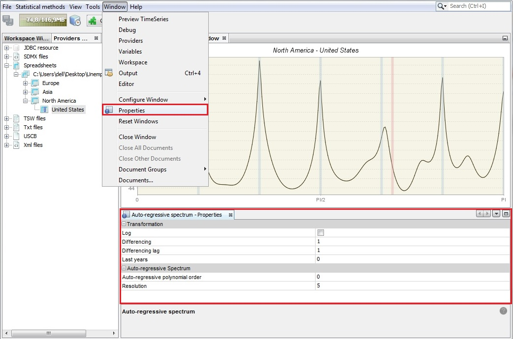
Auto-regressive spectrum’s properties
The spectral graphs are available from: Tools → Spectral analysis.
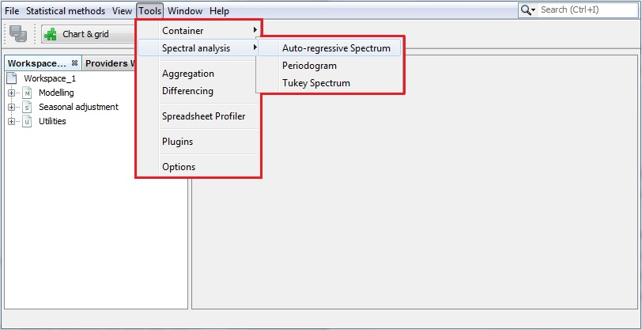
Text Tools for spectral analysis
When the first option is chosen JDemetra+ displays an empty Auto-regressive spectrum window. To start an analysis drag a single time series from the Providers window and drop it into the Drop data here area.
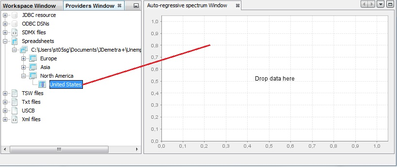
Text Launching an auto-regressive spectrum
An auto-regressive spectrum graph available in JDemetra+ is based on the relevant tool from the X-13ARIMA-SEATS program. It shows the spectral density (spectrum) function, which reformulates the content of the stationary time series’ autocovariances in terms of amplitudes at frequencies of half a cycle per month or less. The number of observations, data transformations and other options such as the specification of the frequency grid and the order of the autoregressive polynomial (30 by default) can be specified by opening the Window → Properties from the main menu.
The Auto-regressive - Properties window contains the following options:
Log - a log transformation of a time series;
Differencing - transforms a data by calculating a regular (order 1,2..) or seasonal (order 4, 12, depending on the time series frequency) differences;
Differencing lag - the number of lags that the program will use to take differences. For example, if Differencing lag = 3 then the differencing filter does not apply to the first lag (default) but to the third lag.
Last years - a number of years at the end of the time series taken to produce autoregresive spectrum. By default, it is 0, which means that the whole time series is considered.
Auto-regressive polynomial order - the number of lags in the AR model that is used to estimate the spectral density. By default, the order of the autoregressive polynomial is set to 30 lags.
Resolution - the value 1 plots the spectral density estimate for the frequencies \(\omega_{j} = \frac{2\pi j}{n}\), where \(n \in ( - \pi;\pi)\) is the size of the sample used to estimate the AR model. Increasing this value, which is set to 5 by default, will increase the precision of this grid.
The seasonality test described above uses an empirical criterion to check whether the series has a seasonal component that is predictable (stable) enough that it can be estimated with reasonable success. The peak in the auto-regressive spectrum has to be greater than the median of the 61 spectrum ordinates and has to exceed the two adjacent spectral values by more than a critical value. When such a case is detected, the test results are displayed in green.
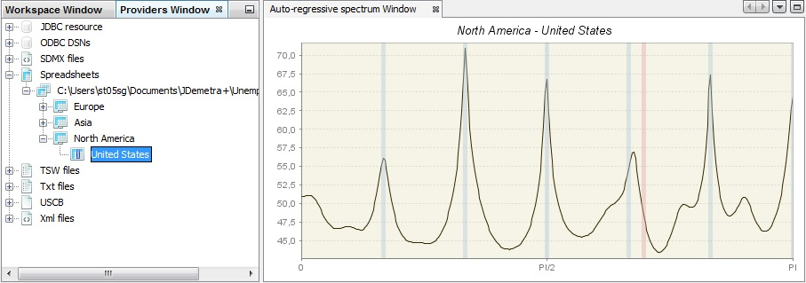
Text An example of an-auto-regressive spectrum
The second spectral graph is a periodogram. To perform the analysis of a single time series using this tool, choose Tools →Spectral analysis → Periodogram and drag and drop a series from the Providers window to the empty Periodogram window.
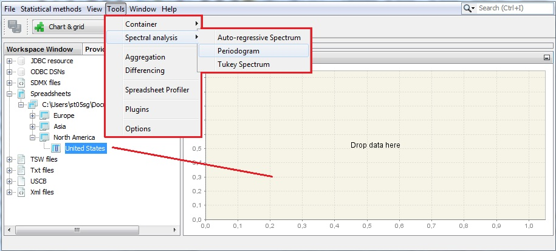
Text Launching a periodogram
The sample size and data transformations can be specified by opening the Window → Properties, in the main menu. The Periodogram - Properties window contains the following options:
Log - a log transformation of a time series;
Differencing - transforms the data by calculating regular (order 1,2..) or seasonal (order 4, 12, depending on the time series frequency) differences;
Differencing lag - the number of lags that you will use to take differences. For example, if Differencing lag = 3 then the differencing filter does not apply to the first lag (default) but to the third lag.
Last years - the number of years at the end of the time series taken to produce periodogram. By default it is 0, which means that the whole time series is considered.
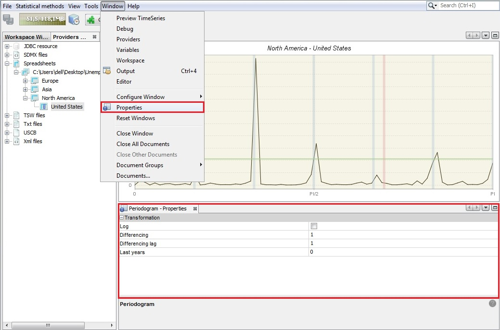
Text Periodogram’s properties
The periodogram was one of the earliest tools used for the analysis of time series in the frequency domain. It enables the user to identify the dominant periods (or frequencies) of a time series. In general, the periodogram is a wildly fluctuating estimate of the spectrum with a high variance and is less stable than an auto-regressive spectrum.
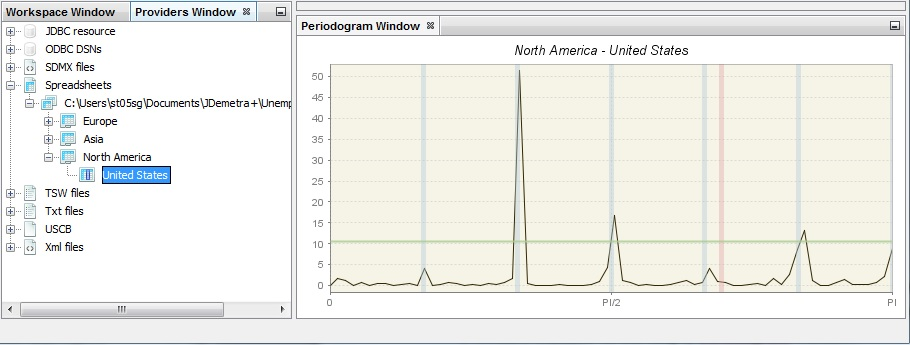
Text An example of a periodogram
The third spectral graph is the Tukey spectrum. To perform the analysis of time series using this tool, choose Tools → Spectral analysis → Tukey spectrum and drag and drop a single series from the Providers window to the empty Periodogram window.
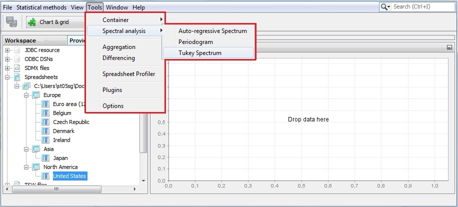
Text Launching a Tukey spectrum
The Tukey spectrum estimates the spectral density by smoothing the periodogram.
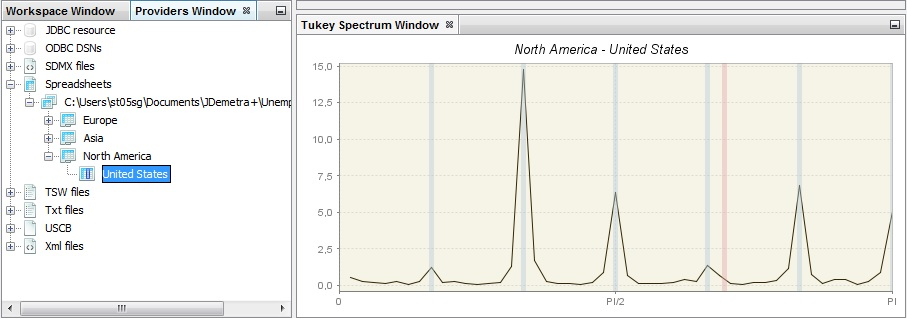
Text An example of a Tukey spectrum
The options for the Tuckey window can be specified by opening the Window → Properties from the main menu. The Periodogram - Properties window contains the following options:
Log - a log transformation of a time series.
Differencing - transforms the data by calculating regular (order 1, 2..) or seasonal (order 4, 12, depending on the time series frequency) differences.
Differencing lag - the number of lags that you will use to take differences. For example, if Differencing lag = 3 then the differencing filter does not apply to the first lag (default) but to the third lag.
Taper part – parameter larger than 0 and smaller or equal to one that shapes the curvature of the smoothing function that is applied to the auto-covariance function.
Window length – the size of the window that is used to smooth the auto-covariance function. A value of zero includes the whole series.
Window type – it refers to the weighting scheme that it is used to smooth the auto-covariance function. The available windows types (Square, Welch, Tukey, Barlett, Hamming, Parzen) are suitable to estimate the spectral density.
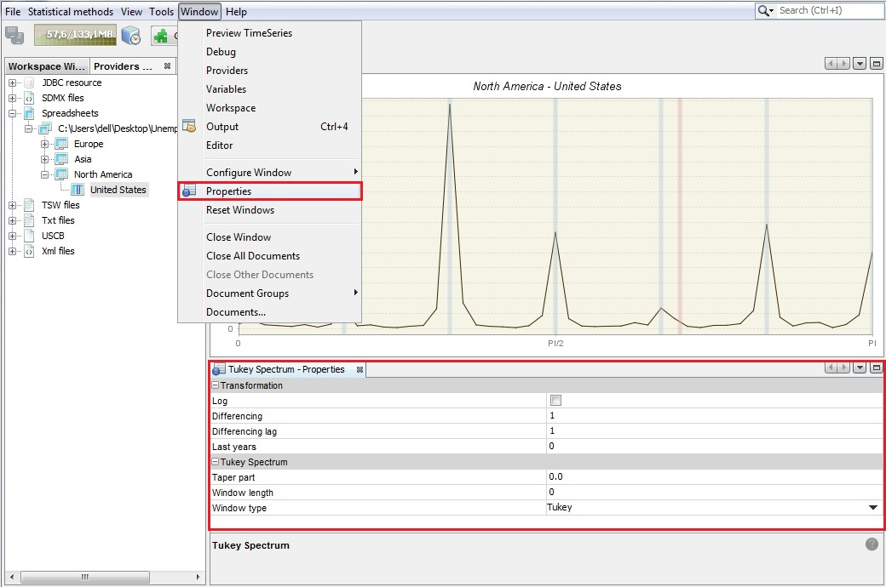
Text Tukey spectrum’s properties
comment3: end part case studies > spectral graphs
HAMILTON, J.D. (1994).↩︎
HAMILTON, J.D. (1994).↩︎
BROCKWELL, P.J., and DAVIS, R.A. (2002).↩︎
HAMILTON, J.D. (1994).↩︎
SOKUP, R.J., and FINDLEY, D. F. (1999).↩︎
BROCKWELL, P.J., and DAVIS, R.A. (2002).↩︎
For details see BROCKWELL, P.J., and DAVIS, R.A. (2006).↩︎
BOX, G.E.P., JENKINS, G.M., and REINSEL, G.C. (2007).↩︎
The proof is given in BROCKWELL, P.J., and DAVIS, R.A. (2006).↩︎
Definition from ‘X-12-ARIMA Reference Manual’ (2011).↩︎
The false alarm rate is defined as the fraction of the 50 replicates for which a visually significant spectral peak occurred at one of the trading day frequencies being considered in the designated output spectra (SOUKUP, R.J., and FINDLEY, D.F. (1999)).↩︎
For definition of the periodogram and Fourier frequencies see section Spectral Analysis↩︎